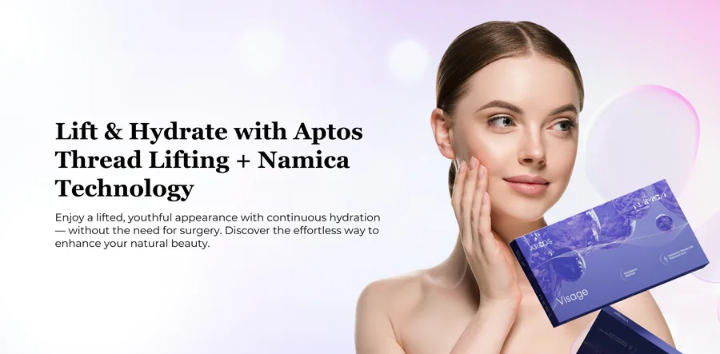
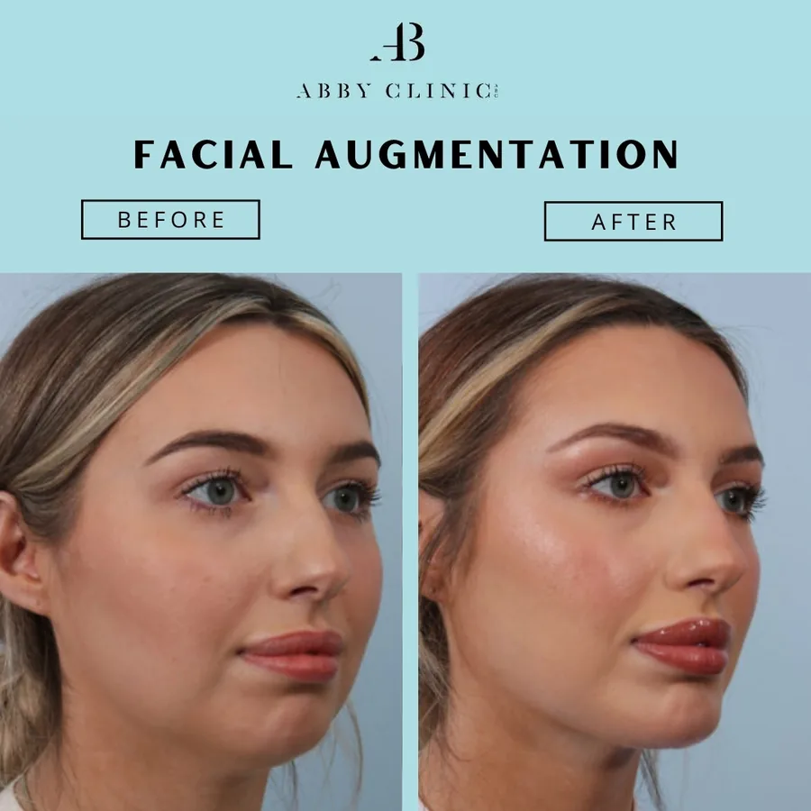
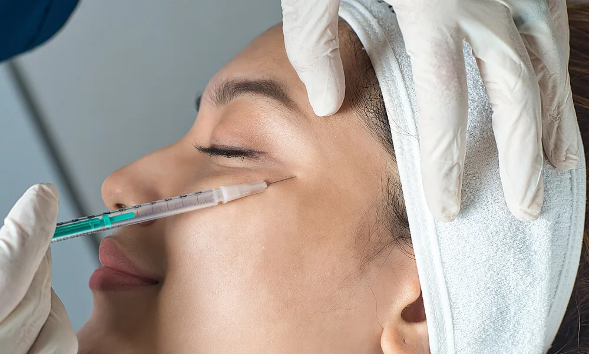
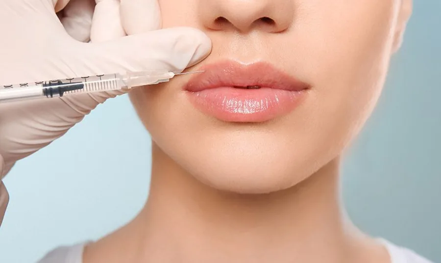
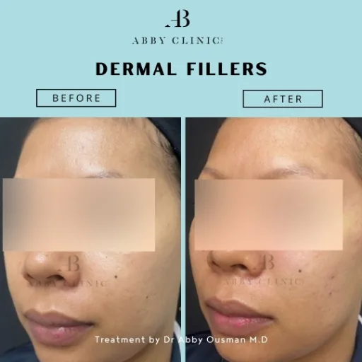
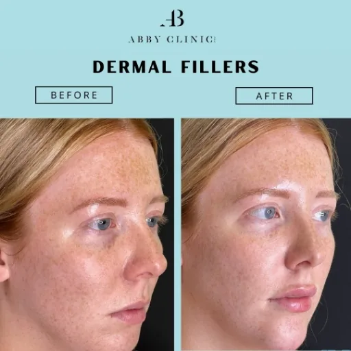
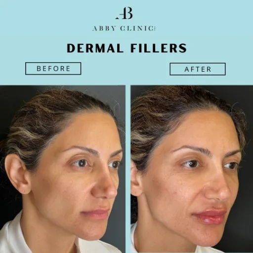
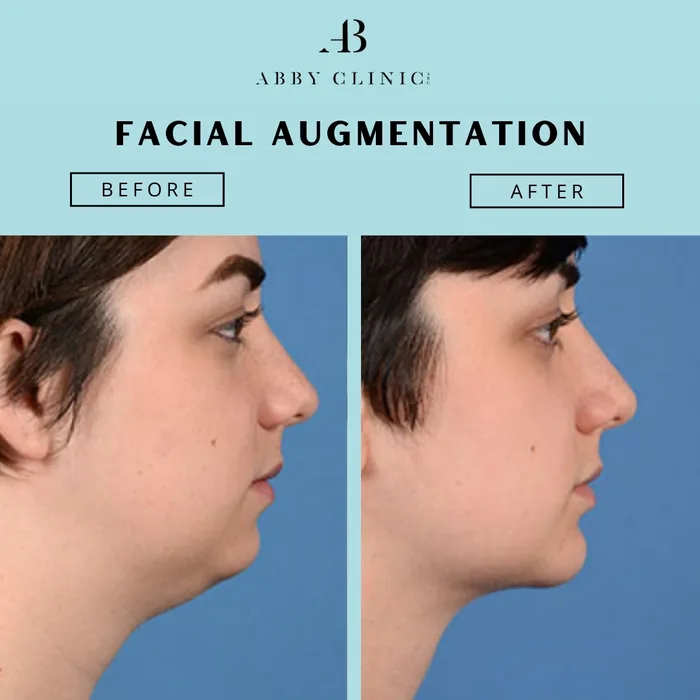
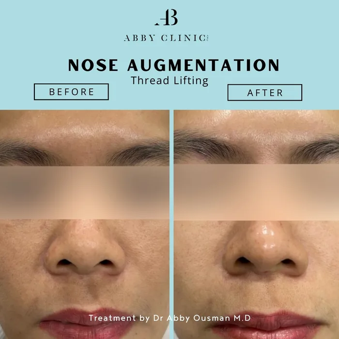

Enhance Your Natural Beauty with ABClinic Non-Surgical Facial Augmentation Treatment
Loss of volume, laxity, and facial asymmetry can dampen one’s confidence. Although surgical facial augmentation treatment is available to address these issues, many are hesitant due to the downtime and risk. Hence, a non-surgical facial augmentation is another suitable solution.
What is Facial Augmentation Treatment & How Does It Work?
Facial augmentation treatment refers to a range of cosmetic procedures aimed at enhancing or altering facial features to achieve a desired aesthetic appearance. These treatments can address various concerns such as lack of volume, asymmetry, or proportionality in different areas of the face.
Dr. Abby Clinic offers a non-surgical and minimally invasive approach to facial augmentation with treatments that suit your skin type, concerns, and preferences!
Discover Our Non-Surgical Face Augmentation Treatment Solutions
Thread Lifting
Lift and tighten your skin with absorbable threads for a smoother, more youthful appearance. This quick, non-surgical treatment reduces wrinkles and sagging, with results lasting up to two years or more.

Dermal Fillers
Plump up the skin and your targeted areas with dermal injections and fillers to restore the facial fullness you desire. Uses hyaluronic acid and/or calcium hydroxyapatite for lasting youthful effects.

Dermal Fillers
Injectable dermal fillers enhance facial features for a more youthful look, plump thin lips, enhance shallow contours, soften facial creases, remove wrinkles & improve the appearance of scars.
What is Dermal Filler and how does it work?
Dermal fillers are widely used today by both individuals and medical professionals. Dermal fillers, which are easily injected into the skin’s surface and are biocompatible, are frequently utilized for a variety of issues, such as plumping up hollows under the eyes, lifting sagging cheekbones, adding volume to thin lips, and smoothing nasolabial folds and lip lines.

Skin Concerns Treated

Fine Lines and wrinkles

Volume loss
Thin or uneven lips

Hollow under-eyes

Sagging skin
Scarring

Marionette Lines
Lip, chin & jawline definition
Sunken temples

Dehydrated skin
Replenishing the skin with Hyaluronic Acid for collagen & elasticity
Such treatments like Dr. Abby Signature Liquid Face Lift; hyaluronic acid, which has the powerful capacity to replenish skin and boost the formation of elastin and collagen to battle wrinkles, is typically added to dermal fillers. Patients’ skin will appear more moisturized, youthful, de-aged, volumized, firmer, and tighter following the procedure.
Gentle & extensive recovery treatment for all patients
Dr. Abby’s most distinctive technique makes each treatment worthy of investment. Dr. Abby’s method is delicate, highly compassionate, and uses a cannula technique to minimize bruising. Post-treatment care also includes using ice packs, healing serum loaded with stem cells, and post-treatment medical concealer to help with any downtime or recovery time.
Enhance, Rejuvenate, and Glow with Dr Abby Clinic Dermal Fillers
Discover how Dr Abby’s dermal fillers can transform your appearance and leave you glowing with confidence.

Personalised Treatments
Every treatment is tailored to your unique features and goals, ensuring natural-looking results that enhance your beauty.
Subtle Enhancements
We focus on creating gentle improvements that refresh your appearance without looking overdone.

Minimal Downtime
Our advanced techniques, including the use of a cannula, reduce bruising and discomfort, allowing for a quick recovery.

Expert Precision
With years of experience, Dr Abby ensures safe and precise filler application for the best results.

Immediate, Long-Lasting Results
Enjoy instant improvements that can last several months to over a year, depending on the filler used.

Hydration and Skin Firming
Our fillers boost skin hydration and collagen, improving firmness and elasticity for a youthful glow.

Gentle Aftercare
We provide healing serums, ice packs, and medical concealers to speed up recovery and reduce any visible signs of treatment.

Trusted, Professional Care
At Dr Abby Clinic, we offer a warm, professional environment where your comfort and results are our top priority.
Ready to Enhance Your Appearance with Dermal Fillers?
Take the first step toward a more confident, radiant you. Book a consultation today to discuss how dermal fillers can enhance your natural beauty with minimal downtime and long-lasting results.


Consultation
Meet with our doctor to discuss your goals and learn how dermal fillers can help enhance your natural beauty.

Confirming Your Eligibility
We’ll assess your skin and overall health to ensure that dermal fillers are the right option for you.

Begin Your Journey
Once we’ve confirmed your suitability, we’ll proceed with your customised treatment plan to give you refreshed, youthful results.
Before & After Dermal Fillers Treatment at Dr Abby Clinic
Our patients reported experiencing positive improvements after undergoing our Dermal Fillers treatment. Check out these stunning before and after photos!



Frequently AskedQuestions (FAQs)
Curious about our dermal filler treatment? Explore this section to learn more!
Dermal fillers are injectable treatments that restore lost volume, smooth wrinkles, and enhance facial contours. They are made from substances like hyaluronic acid, which plump and hydrate the skin, providing a youthful appearance.
Results typically last between 6 to 18 months, depending on the type of filler used, the treatment area, and your skin’s response. Maintenance treatments can help prolong the effects.
Yes, dermal fillers are safe when administered by trained professionals. At Dr Abby Clinic, we use high-quality, approved fillers and follow strict safety protocols to ensure the best possible outcome.
Most patients find the procedure relatively comfortable. We use a gentle cannula technique and can apply numbing cream if needed to minimise any discomfort.
A dermal filler treatment usually takes around 30 to 45 minutes, making it a quick, convenient procedure that can be done during a lunch break.
You may experience mild swelling, redness, or bruising at the injection sites, but these effects usually subside within a few days. We provide aftercare guidance and products to help with recovery.
You’ll notice results immediately after the treatment, with the full effect appearing as any initial swelling goes down. This typically takes a few days.
If you are looking to reduce signs of ageing, restore volume, or enhance facial features, you may be a suitable candidate for dermal fillers. We will assess your individual needs during a consultation to ensure this treatment is right for you.
Minor side effects such as swelling, redness, or bruising can occur but typically resolve within a few days. Serious complications are rare, especially when treated by experienced professionals.
After your treatment, it’s best to avoid strenuous activities, alcohol, and sun exposure for 24 hours. We recommend using ice packs, healing serums, and a medical concealer to aid your recovery and protect your skin.
Facial Augmentation Treatment Solutions That Work For Your Skin
Our clients have reported clear, radiant skin after undergoing facial augmentation treatment at Dr Abby Clinic. Take a look at some of the before-after photos.


Why ChooseDr Abby Clinic
Treatments are performed by LCP certified doctor and accredited therapists
Using FDA approved treatments
Transparent price and rate with no hidden or additional cost
Focusing on results and customer satisfaction
Featured Awards & Achievements
 Top 21 Best Aesthetic Clinics in Malaysia
Top 21 Best Aesthetic Clinics in Malaysia Harpers Bazaar Aesthetics Award 2019 & 20213
Harpers Bazaar Aesthetics Award 2019 & 20213 Top 20 Best Aesthetic Clinics in Klang Valley
Top 20 Best Aesthetic Clinics in Klang Valley Top 20 Best Aesthetic Clinics in Malaysia
Top 20 Best Aesthetic Clinics in Malaysia Top 10 Laser Hair Removal Clinic KL
Top 10 Laser Hair Removal Clinic KLExperience Your Personalised Treatment Today
Great skin doesn’t happen by chance, it happens by appointment.
Book your slot now and let’s make it happen.